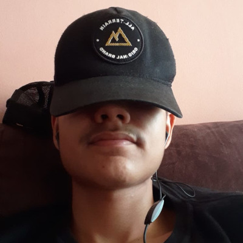

Platões
Quem são?
Os platões são um grupo de amigos preguiçosos, que conseguem dormir em qualquer hora e luga, principalmente quando algum professor começa a falar. Porem somos um grupo unido, os participantes são pessoas legais e divertidas que adoram games eletronicos.
Integrantes:
O nosso grupo é formado por três seres, com poderes que podem dobrar a malha do espaço/tempo, resetar o universo e com uma força inimaginavel. Eles são:
Sombra
Podemos considerar ele como o lider do grupo (pelo menos em trabalhos escolares, o incrivel "cabeça de chave"), ele conta com incriveis abilidades em edição de video e imagens. Em jogos fps seus headshot são incriveis, os seus inimigos até acham que está usando hack de tão perfeita que é a sua movimentação.

Xulips
Mais conhecio como baiano, é dificio encontra-lo acordado está sempre dormindo. Possui abilidades incriveis de marketing digital, podendo vender facilmente uma chuteira para um cadeirante.
Kirito
Um cara que curte programação e tecnogias em geral, inclusive é o criador desse site. É o tipo de pessoa que tem prequiça de ficar com prequiça.
Inimigo mortal
Pedro bié o inimigo mortal dos platões e de toda a humanidade. Uma criatura que foi rejeitado pelo céu e inferno, só o ato dele falar já causa enormes desastres para todos. Sé encontra-lo na rua espanque-o até ficar irreconhecivel.
Servidor
Os Platões possuem um servidor no discord. Para você que quer ficar mais perto desses seres selestiais essa é a sua chance!